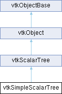

|
Etrek
|
|
Etrek
|
organize data according to scalar values (used to accelerate contouring operations) More...
#include <vtkSimpleScalarTree.h>

Public Member Functions | |
| void | ShallowCopy (vtkScalarTree *stree) override |
| void | BuildTree () override |
| void | Initialize () override |
| void | InitTraversal (double scalarValue) override |
| vtkCell * | GetNextCell (vtkIdType &cellId, vtkIdList *&ptIds, vtkDataArray *cellScalars) override |
| vtkIdType | GetNumberOfCellBatches (double scalarValue) override |
| const vtkIdType * | GetCellBatch (vtkIdType batchNum, vtkIdType &numCells) override |
| vtkTypeMacro (vtkSimpleScalarTree, vtkScalarTree) | |
| void | PrintSelf (ostream &os, vtkIndent indent) override |
| vtkSetClampMacro (BranchingFactor, int, 2, VTK_INT_MAX) | |
| vtkGetMacro (BranchingFactor, int) | |
| vtkGetMacro (Level, int) | |
| vtkSetClampMacro (MaxLevel, int, 1, VTK_INT_MAX) | |
| vtkGetMacro (MaxLevel, int) | |
| Public Member Functions inherited from vtkScalarTree | |
| double | GetScalarValue () |
| vtkTypeMacro (vtkScalarTree, vtkObject) | |
| virtual void | SetDataSet (vtkDataSet *) |
| vtkGetObjectMacro (DataSet, vtkDataSet) | |
| virtual void | SetScalars (vtkDataArray *) |
| vtkGetObjectMacro (Scalars, vtkDataArray) | |
| Public Member Functions inherited from vtkObject | |
| vtkBaseTypeMacro (vtkObject, vtkObjectBase) | |
| virtual void | DebugOn () |
| virtual void | DebugOff () |
| bool | GetDebug () |
| void | SetDebug (bool debugFlag) |
| virtual void | Modified () |
| virtual vtkMTimeType | GetMTime () |
| void | RemoveObserver (unsigned long tag) |
| void | RemoveObservers (unsigned long event) |
| void | RemoveObservers (const char *event) |
| void | RemoveAllObservers () |
| vtkTypeBool | HasObserver (unsigned long event) |
| vtkTypeBool | HasObserver (const char *event) |
| vtkTypeBool | InvokeEvent (unsigned long event) |
| vtkTypeBool | InvokeEvent (const char *event) |
| std::string | GetObjectDescription () const override |
| unsigned long | AddObserver (unsigned long event, vtkCommand *, float priority=0.0f) |
| unsigned long | AddObserver (const char *event, vtkCommand *, float priority=0.0f) |
| vtkCommand * | GetCommand (unsigned long tag) |
| void | RemoveObserver (vtkCommand *) |
| void | RemoveObservers (unsigned long event, vtkCommand *) |
| void | RemoveObservers (const char *event, vtkCommand *) |
| vtkTypeBool | HasObserver (unsigned long event, vtkCommand *) |
| vtkTypeBool | HasObserver (const char *event, vtkCommand *) |
| template<class U, class T> | |
| unsigned long | AddObserver (unsigned long event, U observer, void(T::*callback)(), float priority=0.0f) |
| template<class U, class T> | |
| unsigned long | AddObserver (unsigned long event, U observer, void(T::*callback)(vtkObject *, unsigned long, void *), float priority=0.0f) |
| template<class U, class T> | |
| unsigned long | AddObserver (unsigned long event, U observer, bool(T::*callback)(vtkObject *, unsigned long, void *), float priority=0.0f) |
| vtkTypeBool | InvokeEvent (unsigned long event, void *callData) |
| vtkTypeBool | InvokeEvent (const char *event, void *callData) |
| virtual void | SetObjectName (const std::string &objectName) |
| virtual std::string | GetObjectName () const |
| Public Member Functions inherited from vtkObjectBase | |
| const char * | GetClassName () const |
| virtual vtkTypeBool | IsA (const char *name) |
| virtual vtkIdType | GetNumberOfGenerationsFromBase (const char *name) |
| virtual void | Delete () |
| virtual void | FastDelete () |
| void | InitializeObjectBase () |
| void | Print (ostream &os) |
| void | Register (vtkObjectBase *o) |
| virtual void | UnRegister (vtkObjectBase *o) |
| int | GetReferenceCount () |
| void | SetReferenceCount (int) |
| bool | GetIsInMemkind () const |
| virtual void | PrintHeader (ostream &os, vtkIndent indent) |
| virtual void | PrintTrailer (ostream &os, vtkIndent indent) |
| virtual bool | UsesGarbageCollector () const |
Static Public Member Functions | |
| static vtkSimpleScalarTree * | New () |
| Static Public Member Functions inherited from vtkObject | |
| static vtkObject * | New () |
| static void | BreakOnError () |
| static void | SetGlobalWarningDisplay (vtkTypeBool val) |
| static void | GlobalWarningDisplayOn () |
| static void | GlobalWarningDisplayOff () |
| static vtkTypeBool | GetGlobalWarningDisplay () |
| Static Public Member Functions inherited from vtkObjectBase | |
| static vtkTypeBool | IsTypeOf (const char *name) |
| static vtkIdType | GetNumberOfGenerationsFromBaseType (const char *name) |
| static vtkObjectBase * | New () |
| static void | SetMemkindDirectory (const char *directoryname) |
| static bool | GetUsingMemkind () |
Protected Attributes | |
| int | MaxLevel |
| int | Level |
| int | BranchingFactor |
| vtkScalarNode * | Tree |
| int | TreeSize |
| vtkIdType | LeafOffset |
| Protected Attributes inherited from vtkScalarTree | |
| vtkDataSet * | DataSet |
| vtkDataArray * | Scalars |
| double | ScalarValue |
| vtkTimeStamp | BuildTime |
| Protected Attributes inherited from vtkObject | |
| bool | Debug |
| vtkTimeStamp | MTime |
| vtkSubjectHelper * | SubjectHelper |
| std::string | ObjectName |
| Protected Attributes inherited from vtkObjectBase | |
| std::atomic< int32_t > | ReferenceCount |
| vtkWeakPointerBase ** | WeakPointers |
Additional Inherited Members | |
| Protected Member Functions inherited from vtkObject | |
| void | RegisterInternal (vtkObjectBase *, vtkTypeBool check) override |
| void | UnRegisterInternal (vtkObjectBase *, vtkTypeBool check) override |
| void | InternalGrabFocus (vtkCommand *mouseEvents, vtkCommand *keypressEvents=nullptr) |
| void | InternalReleaseFocus () |
| Protected Member Functions inherited from vtkObjectBase | |
| virtual void | ReportReferences (vtkGarbageCollector *) |
| vtkObjectBase (const vtkObjectBase &) | |
| void | operator= (const vtkObjectBase &) |
| Static Protected Member Functions inherited from vtkObjectBase | |
| static vtkMallocingFunction | GetCurrentMallocFunction () |
| static vtkReallocingFunction | GetCurrentReallocFunction () |
| static vtkFreeingFunction | GetCurrentFreeFunction () |
| static vtkFreeingFunction | GetAlternateFreeFunction () |
organize data according to scalar values (used to accelerate contouring operations)
vtkSimpleScalarTree creates a pointerless binary tree that helps search for cells that lie within a particular scalar range. This object is used to accelerate some contouring (and other scalar-based techniques).
The tree consists of an array of (min,max) scalar range pairs per node in the tree. The (min,max) range is determined from looking at the range of the children of the tree node. If the node is a leaf, then the range is determined by scanning the range of scalar data in n cells in the dataset. The n cells are determined by arbitrary selecting cell ids from id(i) to id(i+n), and where n is specified using the BranchingFactor ivar. Note that leaf node i=0 contains the scalar range computed from cell ids (0,n-1); leaf node i=1 contains the range from cell ids (n,2n-1); and so on. The implication is that there are no direct lists of cell ids per leaf node, instead the cell ids are implicitly known. Despite the arbitrary grouping of cells, in practice this scalar tree actually performs quite well due to spatial/data coherence.
This class has an API that supports both serial and parallel operation. The parallel API enables the using class to grab arrays (or batches) of cells that potentially intersect the isocontour. These batches can then be processed in separate threads.
|
overridevirtual |
Construct the scalar tree from the dataset provided. Checks build times and modified time from input and reconstructs the tree if necessary.
Implements vtkScalarTree.
|
overridevirtual |
Return the array of cell ids in the specified batch. The method also returns the number of cell ids in the array. Make sure to call GetNumberOfCellBatches() beforehand.
Implements vtkScalarTree.
|
overridevirtual |
Return the next cell that may contain scalar value specified to initialize traversal. The value nullptr is returned if the list is exhausted. Make sure that InitTraversal() has been invoked first or you'll get erratic behavior.
Implements vtkScalarTree.
|
overridevirtual |
Get the number of cell batches available for processing as a function of the specified scalar value. Each batch contains a list of candidate cells that may contain the specified isocontour value.
Implements vtkScalarTree.
|
overridevirtual |
Initialize locator. Frees memory and resets object as appropriate.
Implements vtkScalarTree.
|
overridevirtual |
Begin to traverse the cells based on a scalar value. Returned cells will likely have scalar values that span the scalar value specified.
Implements vtkScalarTree.
|
static |
Instantiate scalar tree with maximum level of 20 and branching factor of three.
|
overridevirtual |
Methods invoked by print to print information about the object including superclasses. Typically not called by the user (use Print() instead) but used in the hierarchical print process to combine the output of several classes.
Reimplemented from vtkScalarTree.
|
overridevirtual |
This method is used to copy data members when cloning an instance of the class. It does not copy heavy data.
Reimplemented from vtkScalarTree.
| vtkSimpleScalarTree::vtkGetMacro | ( | Level | , |
| int | ) |
Get the level of the scalar tree. This value may change each time the scalar tree is built and the branching factor changes.
| vtkSimpleScalarTree::vtkSetClampMacro | ( | BranchingFactor | , |
| int | , | ||
| 2 | , | ||
| VTK_INT_MAX | ) |
Set the branching factor for the tree. This is the number of children per tree node. Smaller values (minimum is 2) mean deeper trees and more memory overhead. Larger values mean shallower trees, less memory usage, but worse performance.
| vtkSimpleScalarTree::vtkSetClampMacro | ( | MaxLevel | , |
| int | , | ||
| 1 | , | ||
| VTK_INT_MAX | ) |
Set the maximum allowable level for the tree.
| vtkSimpleScalarTree::vtkTypeMacro | ( | vtkSimpleScalarTree | , |
| vtkScalarTree | ) |
Standard type related macros and PrintSelf() method.